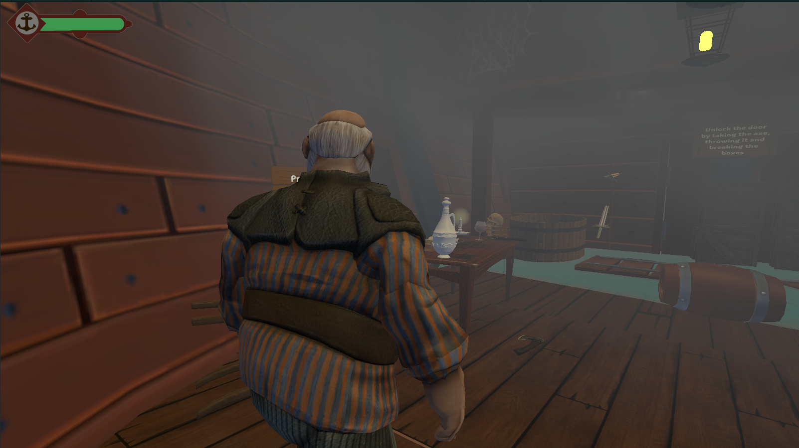
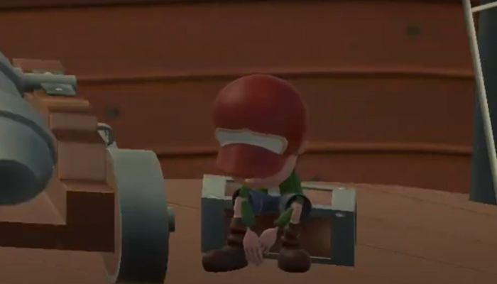
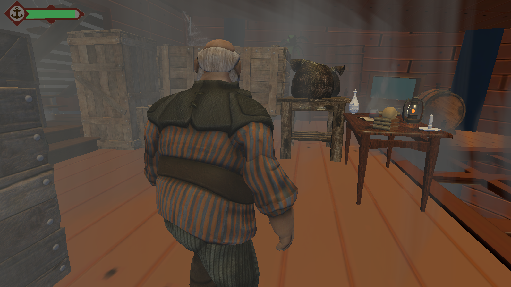

Nuestro equipo participó en el segundo Jam de Generation, donde nos enfrentamos al desafío de crear un juego de supervivencia. Juntos, desarrollamos una cautivadora historia que lleva a los jugadores a través de un emocionante naufragio y el posterior rescate del hijo del protagonista, enfrentándose a numerosos desafíos en el proceso.
Utilizando el lenguaje de programación C# y el motor de juegos Unity, dedicamos horas de trabajo en el desarrollo de esta experiencia interactiva. El juego se centra en la desesperada misión de un padre, el jugador, quien se infiltra en un barco pirata para salvar a su hijo secuestrado. Sin embargo, la situación se complica cuando el barco se encuentra al borde del naufragio, sumergiendo al jugador en una carrera contrarreloj para rescatar a su hijo antes de que sea demasiado tarde, enfrentando peligros inminentes mientras el barco se hunde en las aguas turbulentas.
⚙️ Mecánicas de Juego - Programación:
🏕️ Diseño de Nivel
🎨 Interfaz de Usuario (UI)
💃 Animación
🤝 Autores
| Andrea Mejia | Jhon Mario Aza | Diana Díaz |
|---|---|---|
| Game Programmer
UI |
Sound design
Environment |
Modelado 3D |